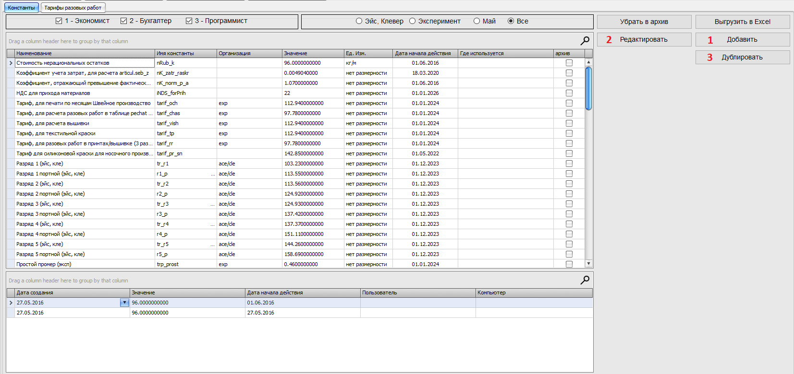
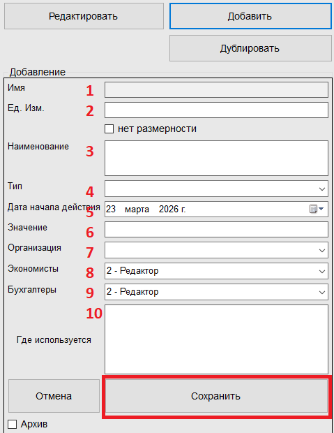
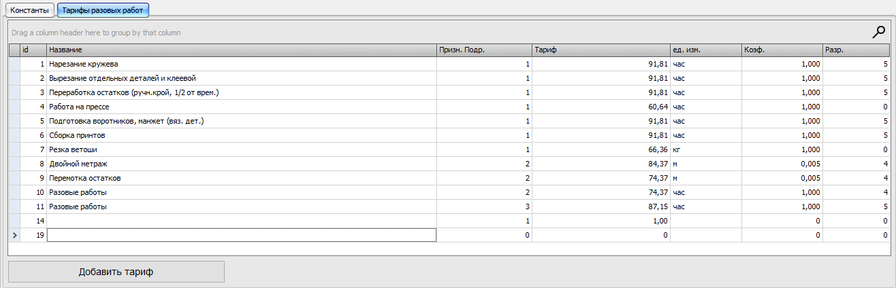

Кнопка "Добавить" нужна для добавления НОВОЙ константы,
при нажатии - открывается окно ввода.
Поле ИМЯ не заполняется, оно нужно для программы, если нужно его добавить обратитесь в отдел ПО.
Кнопка "Редактировать" нужна для изменения ТЕКУЩЕЙ константы,
Нужно выбрать константу в основной таблице и нажать на кнопку "Редактировать",
после этого откроется окно ввода.
Некоторые поля недоступны для редактирования, они выделены серым цветом
История изменений значений константы находится внизу, под основной таблицей.
Если есть необходимость создать похожую константу
Нужно выбрать константу в основной таблице и нажать на кнопку "Дублировать",
Откроется окно для добавления новой константы, но данные подставятся с выбранной
Открывается по кнопкам "Добавить", "Редактировать", "Дублировать".

1) Имя - имя контсанты для программы - пользователем НЕ ЗАПОЛНЯЕТСЯ
2) Ед. Изм. - еденицы измерения (кг,м и т.д.), если нету - поставьте галочку "нет размерности"
3) Наименование - имя для пользователей, обязательно для заполнения
4) Тип - (тип данных) нужно для программы (в скобках примеры):
Value_numeric - тип для хранения точных чисел с фиксированной точностью (5.555555555).5) Дата начала действия - дата с которой актуальна (действует) константа.
6) Значение - главное поле, показывает какие данные хранит в себе константа.
7) Организация - в какой организации используется.
8) Экономисты - доступ для экономистов*
9) Бухгалтеры - доступ для бухгалтеров*
10) Где используется - описание где используется данная константа
* Доступ :Убрать в архив - перемещает выбранную константу в архив, чтобы вернуть ее, обратитесь в отдел ПО.
Выгрузить в Excel - создает отчет исходя из данных в основной таблице (с примененным фильтром).
Отмена - Отменяет "Добавление", "Редактирование", "Дублирование", чистит поля ввода.
Сверху таблицы есть 2 отдела :
1 - галочки доступа, при активной галочке "Экономисты" - показываются константы доступные экономистам, для бухгалтеров - аналогично.Также можно наложить фильтр как в Excel, нажав на воронку в названии столбца
Под основной таблицей с константами находиться таблица истории выбранной константы, в ней имеется информация когда и кем создана константа, а также какое значение она принимала.
Вторая вкладка в данной форме

Для изменения тарифа, выберите нужную строчку и нажмите дважды на нее левой кнопкой мыши.
Для добавления нового тарифа - нажмите на соответсвующую кнопку или выберите пустую строчку для редактирования.